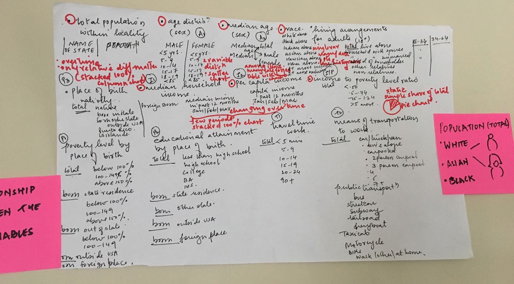
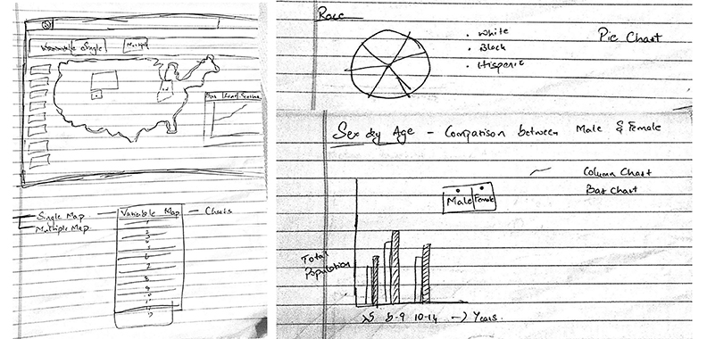
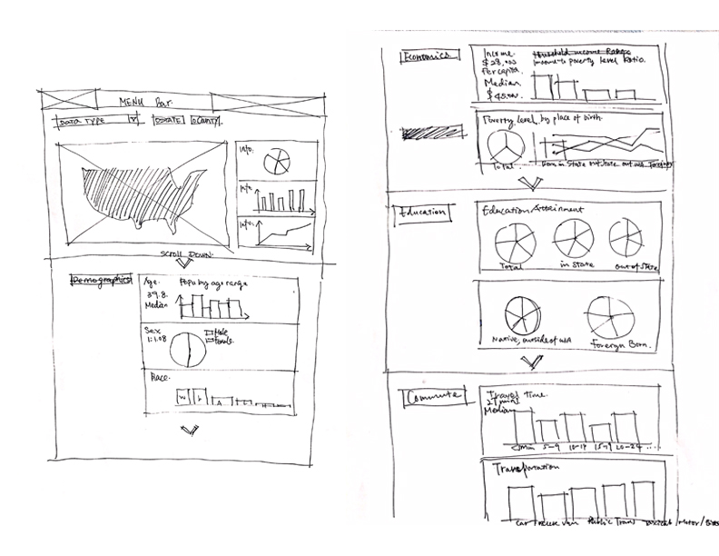
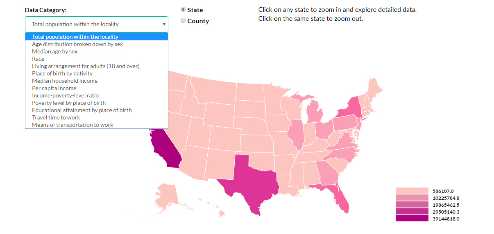
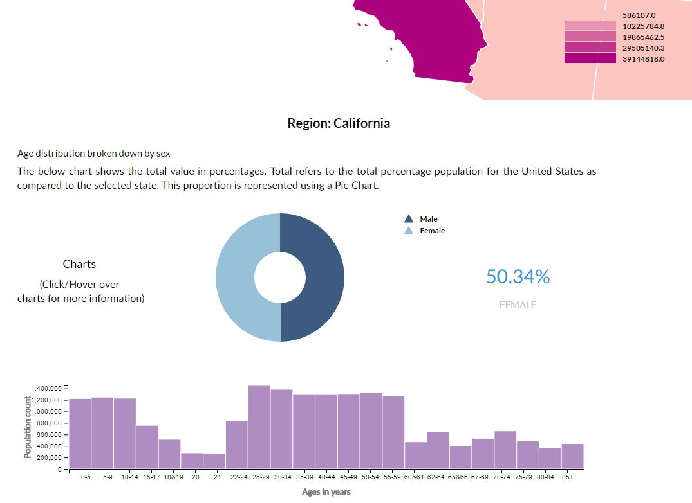
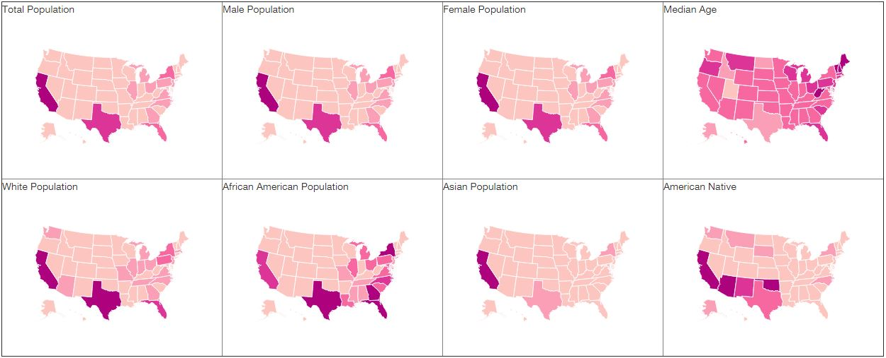

This project aims to visualize 13 variables of census data using a combination of choropleth map, pie chart, bar graph, small multiples and scatter plot. The primary dataset used in this project is 2015 American Community Survey (ACS). The ACS dataset is annually compiled by the US Census, and designed to provide broad demographic and socio-economic characteristics of the US population.
This is a team project for a data visualization course(H590) in IUPUI.
*Team Member: Shanglei Zhang, Pruthviraj narayanaswamy, Abhishek Murali, Alita Pinto
Click to see the project site.
Project SiteClick on any state to zoom in and explore detailed data.
Click on the same state to zoom out.
|
Design Process1. Brainstorm. Brainstorm. Brainstorm.How will the visualization help users understand the data? The first step was to define a clear objective. The data in this project is the 2015 American census information that includes demographic info, household income, living arrangement, education, means of transportation, travel time to work and so on. Identifying appropriate charts that best represent the data is the starting point. After the exploritory data analysis, we adapted a combination of choropleth map, pie chart, bar graph, small multiples and scatter plot to visualize different variables in the data set.  Brainstorm (initial analysis of correlated variables and appropriate charts for data) 2. Sensemaking of the datavis navigation flowHaving brainstormed the overall plan, and identified the types of charts for different variables, the initial page layout sketches helped inform the navigational flow. The choropleth map with a dropdown list provided an overall idea of the real estate available for placement of thirteen variables. Radio buttons are provided to switch between the State and County data. Clicking on the area of a state or a county, would dynamically reveal the detailed data in the form of pie chart and bar graph. The rationale is to reduce number of choices and operational steps to minimized the cognitive load on the user. A sequential color scheme is selected based on Colorbrewer to represent the different value ranges of the data, and ensure W3C compliant. Sketch Wireframes and Navigation Flow Choropleth Map with Dropdown List and Rdiao Buttons 3. Iterate. Iterate. Iterate. And drill into the detailsAfter the initial coding of the project was complete, there are several iterations upon the designs element and information seeking flow. Following the information-seeking mantra introduced by Ben Shneiderman : Overview First -> Zoom and Filter -> Details on Demand (Ben Shneiderman), we decided to place a pie chart and a bar graph below the choropleth map, allowing users to drill down into the details of the data. Small multiples and scatter plot are also used to show our insight gained from the project. Data Details 4. Insights & ConclusionsWith each iteration, details and correlations between the data are observed. Small multiples and a scatter plot are also used to show our insight gained from the project. The small multiple map showcased interesting trends present in the US census data. For instance, the native population is highest in southern states such as New Mexico, Texas, Oklahoma & Arizona. A quick google search revealed that the region of Oklahoma had settled occupation that dates back to a previous time in history. This may be attributed to one of the reasons the high number of natives living in Oklahoma. Further analysis revealed the African American population - largest group in racial minority, was concentrated more towards the southern states of Georgia, Florida, Virginia. If we look to history, we find that slaves from Africa were brought to the southern states for work on plantations. It is clear from our data, that even though this group has migrated to other areas, majority of them still find themselves living in the southern states. Small Multiples for Comparison
References
|